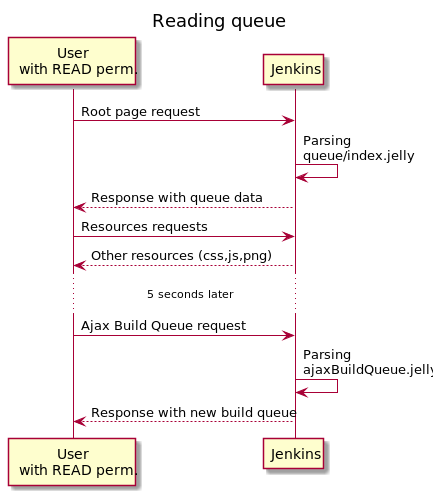
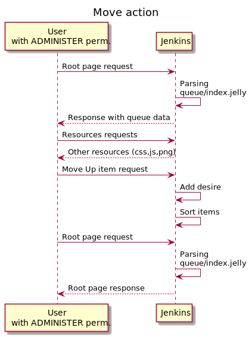
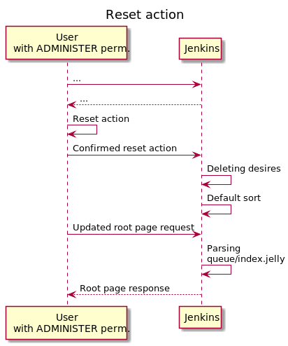

For plugin developers
This section is intended for people who want to further extend this plugin.
Testing build
mvn hpi:run
Performing release
Always test connection before release. Testing connection: ssh -T git@github.com
Release:
mvn release:prepare
mvn release:perform
Do not forget to update docs if needed
cd docs_src/
mkdocs build
cd ..
git rm -rf docs
mv docs_src/site docs
git add docs
Once pushed, they will appear in https://jenkinsci.github.io automagically
Feel free to run mvn spotless:apply from time to time to align codestyle and formatting
Documentation
The documentation framework used is mkdocs. To see the documentation before publishing use 'pip install mkdocs-material' followed by 'mkdocs serve'
How it works inside



Jenkins Queue overview
This plugin supports management of "Buildable Queue Items".
What does this statement technically mean?
Jenkins queue architecture
In Jenkins, QueueItem and Queue.BuildableItem represent
different levels of specificity in the build queue. Queued items
typically spend most of their time in the blocked and/or buildable
state, and quickly pass others to produce a Run (if they are not
canceled before):
- The QueueItem is a general-purpose Java interface representing
an item in any stage of the Jenkins queue.
- The Queue.BlockedItem is a concrete class (implementation)
representing an item that Jenkins has a reason not to run yet.
Even a free executor won't necessarily help. For example, jobs
may be configured to forbid concurrent runs, or additional plugins
like Build Blocker or Throttle Concurrent Builds can be used to
similar effect by implementing QueueTaskDispatcher.canRun().
- The Queue.BuildableItem is a concrete class (implementation)
representing an item that has passed the initial waiting period
and is eligible for execution (all scheduling conditions are
satisfied), but is still waiting for an available executor (e.g.
when there are no suitable workers are available at the moment).
- There are other implementations of this interface, see the
diagram below for standard ones.
Jenkins queue items move through several stages:
schedule()
|
v
WaitingItem
(quiet period)
|
v
BlockedItem
(cannot run yet)
|
v
BuildableItem
(ready, needs executor)
|
v
Pending
(assigned to executor)
|
v
Running
(a Run may appear, QueueItem is removed)
Note one subtlety: Jenkins queue objects are snapshots of a
particular stage in an item's lifecycle. An item may transition
between stages while your code is inspecting it. The queue ID is
designed to remain stable across those transitions, and even into
the resulting Run (see Run.getQueueId()). That makes the
QueueItem.getId() particularly useful for tracking a build
across its lifecycle.
Also note that if a job requires multiple stages with a node
(or agent in Declarative), additional QueueItems appear named
like "part of BUILD_NAME". In case of simultaneous independent
runs, or parallel step used to run pipeline stages on different
nodes at the same time, you can end up with multiple such queue
items -- each with a separate priority that can be managed with
this plugin, and with its own conditions evaluated to go from
"buildable" to "running" (e.g. as executors on those nodes pick
up a new piece of work).
Queue investigation and troubleshooting
You can inspect the active queue using your Jenkins scripting console:
import hudson.model.Queue
import jenkins.model.Jenkins
def now = System.currentTimeMillis()
Jenkins.instance.queue.items.each { item ->
def age = (now - item.inQueueSince) / 1000
println """
${item.task.fullDisplayName}
ID: ${item.id}
Type: ${item.class.name}
Age: ${age}s
Blocked: ${item.blocked}
Buildable: ${item.buildable}
Stuck: ${item.stuck}
Why: ${item.why}
"""
}
To monitor the time spent by objects in the queue, you could
use existing metrics in the Metrics plugin, including
jenkins.task.blocked.duration, jenkins.task.buildable.duration,
jenkins.task.waiting.duration and jenkins.task.queuing.duration.
Alternatively, you can dig through QueueListener callbacks
exposed by Jenkins (e.g. if you suspect a systemic problem),
including onEnterWaiting, onLeaveWaiting, onEnterBlocked,
onLeaveBlocked, onEnterBuildable and onLeaveBuildable -- but
this would probably require that you write a small plugin dedicated
to this investigation.
Queue item comparison and sorting
For general authoritative reference, see:
- https://javadoc.jenkins-ci.org/hudson/model/queue/QueueSorter.html
- https://javadoc.jenkins-ci.org/hudson/model/Queue.Item.html
- https://javadoc.jenkins-ci.org/hudson/model/Queue.BlockedItem.html
- https://javadoc.jenkins-ci.org/hudson/model/Queue.BuildableItem.html
- https://javadoc.jenkins-ci.org/hudson/model/Queue.html
- https://docs.oracle.com/en/java/javase/21/docs/api/java.base/java/util/Comparator.html
Given the different QueueItem family life cycles, Jenkins has dedicated
QueueSorter.sortBlockedItems() and QueueSorter.sortBuildableItems()
methods for stages they spend most time in.
Jenkins has a special default queue item comparator,
QueueSorter.DEFAULT_BLOCKED_ITEM_COMPARATOR, which sorts by time
spent in the queue -- it compares Items based on getInQueueSince()
and in turn according to buildableStartMilliseconds for items derived from
Queue.NotWaitingItem
class.
This applies to collections of such classes as BlockedItem and BuildableItem
stored in a List(-derived) class, but may not apply to different QueueItem
family types, such as the waitingList which is actually backed by a Set in the
Queue
class implementation.
Jenkins allows to define extension points, including implementations
of QueueSorter, which can be effectively stacked when multiple queue
sorting plugins are installed, as well as default behavior -- see the
originalQueueSorter in this plugin's implementation.
Manual queue ordering
The previously registered sorter establishes the automatic order, usually by queue entry timestamps. Manual moves record desires for the items they move past. These desires form a partial order: an item may need to precede another without having a preference relative to every other item.
SimpleQueueSorter applies those desires with one shared topological sort for
buildable, blocked and mixed not-waiting lists. At each step it
chooses the earliest item in automatic order whose predecessors have already been
emitted. SimpleQueueComparator stores the desires; its compare() method is not
used to order these lists.
For automatic order [C]3 [A]4 [D]5 [B]6 [E]7 and desire 7 => [6, 4], E must
precede B and A. The ready items initially are C, D and E. Selecting C, then D,
then E makes A and B ready, giving [C]3 [D]5 [E]7 [A]4 [B]6. Items that are
ready together retain their relative automatic priority. Contradictory desires
are best-effort: if no item is ready, the earliest automatic-order item actually
on a cycle is emitted to break that cycle.
The previous sorter's result is the input priority for each pass; manual desires constrain that result. For mixed lists, its blocked and buildable results are placed back into the original slots of each kind before applying desires across kinds. Jenkins does not provide a previous-sorter method for mixed lists. This does not guarantee the final order if another plugin subsequently replaces the active sorter or changes the list.
Original comparator trace
The following explanation is preserved verbatim from the former comparator-based sorter. It documents the nonadjacent-desire bug fixed by the topological sort above; it is not a trace of the current algorithm.
Note: the sort() method does not compare everyone to everyone,
it passes the list comparing nearby couples and only steps back
a bit if some two (neighboring!) entries were swapped. Example:
* list start: [C]3 [A]4 [D]5 [B]6 [E]7
* comparator desires, one: 7 (more important) => [6, 4]
so E should move to the middle of the list, A and B to the right?..
* comparisons as traced in debugger (steps into the compare()
method and its two args):
* Round 1, starting with C A D B E:
* A, C => 0
* D, A => 0
* B, D => 0
* E, B => -1 (E more important)
* List swapped (E vs B)
* Round 2, proceeding with C A D E B
* E, D => 0
* E, B => -1
* No more swapping (correct order of E vs B already),
* List remains C A D E B
* Note that [E]7 was never compared to A[4], they were too far away
so the expected desire for C D E A B (nor C D E B A technically)
was not fulfilled UNTIL desires for A vs. D and A vs. E got defined,
and the move*() methods for arrays got more complex that initially.